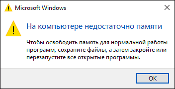
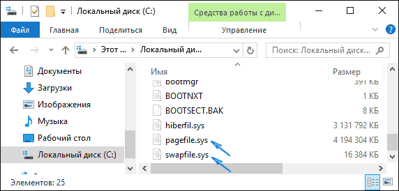
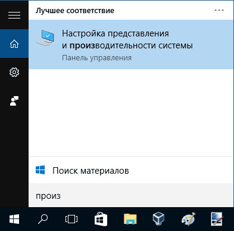
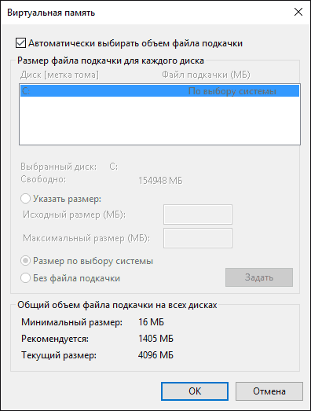
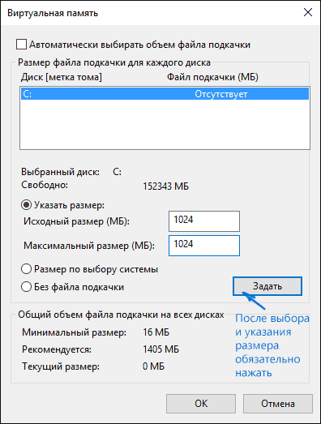
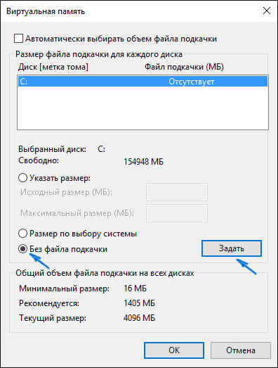
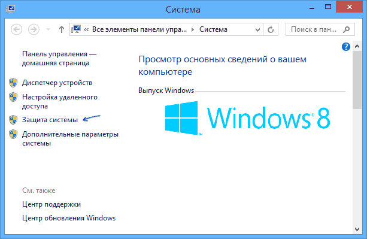
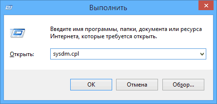
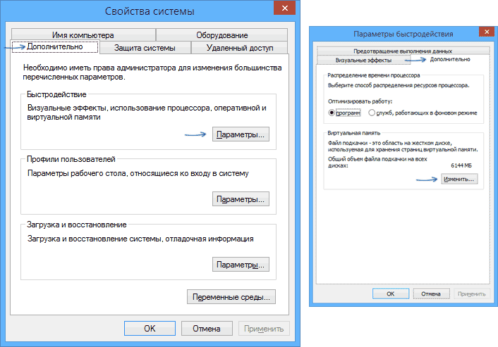
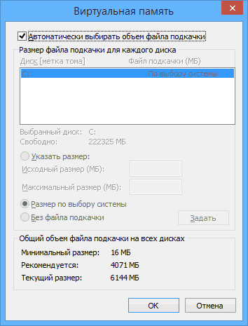

Файл подкачки Windows 10, 8 и Windows 7
25.02.2016 windows
В операционных системах Windows для работы используется так называемый файл подкачки pagefile.sys (скрытый и системный, обычно находится на диске C), представляющий своего рода «расширение» оперативной памяти компьютера (иначе — виртуальная память) и обеспечивающий работу программ даже в том случае, когда физической памяти RAM недостаточно.
Windows также пытается переместить неиспользуемые данные из оперативной памяти в файл подкачки, причем, по информации Microsoft, каждая новая версия делает это лучше. Например, данные из RAM свернутой и неиспользуемой в течение некоторого времени программы, могут быть перемещены в файл подкачки, поэтому ее последующее открытие может быть более медленным, чем обычно и вызывать обращения к жесткому диску компьютера.
При отключенном файле подкачке и небольшом размере оперативной памяти (или при использовании требовательных к ресурсам компьютера процессов), вы можете получить сообщение с предупреждением: «На компьютере недостаточно памяти. Чтобы освободить память для нормальной работы программ, сохраните файлы, а затем закройте или перезапустите все открытые программы» или «Чтобы предотвратить потерю данных, закройте программы.

По умолчанию, Windows 10, 8.1 и Windows 7 автоматически определяют его параметры, однако в ряде случаев изменение файла подкачки вручную может помочь оптимизировать работу системы, иногда может быть целесообразно вообще отключить его, а в некоторых других ситуациях самое лучшее — ничего не изменять и оставить автоматическое определение размера файла подкачки. В этом руководстве — о том, как увеличить, уменьшить или отключить файл подкачки и удалить файл pagefile.sys с диска, а также о том как правильно настроить файл подкачки, в зависимости от того, как вы используете компьютер и его характеристик. Также в статье присутствует видео инструкция.
Помимо файла подкачки pagefile.sys, который был и в предыдущих версиях ОС, в Windows 10 (еще в 8, на самом деле) появился новый скрытый системный файл swapfile.sys так же находящийся в корне системного раздела диска и, по сути, тоже представляющий собой своеобразный файл подкачки, используемый не для обычных («Классическое приложение» в терминологии Windows 10), а для «Универсальных приложений», ранее называемые Метро-приложениями и еще несколькими именами.

Новый файл подкачки swapfile.sys потребовался в связи с тем, что для универсальных приложений изменились способы работы с памятью и, в отличие от обычных программ, которые используют файл подкачки как обычную оперативную память, файл swapfile.sys используется как файл, хранящий «полное» состояние отдельных приложений, своего рода файл гибернации конкретных приложений, из которого они могут в короткое время могут продолжать работу при обращении.
Предвидя вопрос о том, как удалить swapfile.sys: его наличие зависит от того, включен ли обычный файл подкачки (виртуальная память), т.е. удаляется он тем же способом, что и pagefile.sys, они взаимосвязаны.
Как увеличить, уменьшить или удалить файл подкачки в Windows 10
А теперь о настройке файла подкачки в Windows 10 и каким образом его можно увеличить (хотя тут, пожалуй, лучше просто задать рекомендуемые параметры системы), уменьшить, если вы считаете, что у вас достаточно оперативной памяти на компьютере или ноутбуке, или полностью отключить, освободив тем самым место на жестком диске.
Для того, чтобы зайти в настройки файла подкачки Windows 10, вы можете просто начать набирать слово «производительность» в поле поиска, после чего выбрать пункт «Настройка представления и производительности системы».

В открывшемся окне выберите вкладку «Дополнительно», а в разделе «Виртуальная память» нажмите кнопку «Изменить» для настройки виртуальной памяти.
По умолчанию в параметрах будет установлено «Автоматически выбирать объем файла подкачки» и на сегодня (2016), пожалуй, это и есть моя рекомендация для большинства пользователей.

Текст в конце инструкции, где я рассказываю, как правильно настроить файл подкачки в Windows и какие размеры задать при разном размере оперативной памяти, написан два года назад (а сейчас обновлен) хоть, вероятнее всего, не принесет вреда, все-таки не является тем, что я рекомендовал бы делать начинающим пользователям. Тем не менее, такое действие как перенос файла подкачки на другой диск или установка фиксированного размера для него могут иметь смысл в некоторых случаях. Информацию об этих нюансах вы также можете найти ниже.
Для того, чтобы увеличить или уменьшить, т.е. задать вручную размер файла подкачки, снимите отметку с автоматического определения размера, отметьте пункт «Указать размер» и задайте нужные размеры и нажмите кнопку «Задать». После этого примените настройки. Изменения вступают в силу после перезагрузки Windows 10.

Для того, чтобы отключить файл подкачки и удалить файл pagefile.sys с диска C, выберите пункт «Без файла подкачки», а затем нажмите кнопку «Задать» справа и утвердительно ответьте на появившееся в результате сообщение и нажмите Ок.

Файл подкачки с жесткого диска или SSD пропадает не сразу, а после перезагрузки компьютера, удалить его вручную до этого момента не получится: вы будете видеть сообщение о том, что он используется. Далее в статье имеется также видео, в котором показаны все описанные выше операции по изменению файла подкачки в Windows 10.
Как уменьшить или увеличить файл подкачки в Windows 7 и 8
Прежде чем рассказывать о том, какой размер файла подкачки оптимальный для различных сценариев, покажу, как вы можете менять этот размер или отключить использование виртуальной памяти Windows.

Для настройки параметров файла подкачки, зайдите в «Свойства компьютера» (правый клик по значку «Мой компьютер» — свойства»), после чего в списке слева выберите «Защита системы». Более быстрый способ сделать то же самое — нажать клавиши Win + R на клавиатуре и ввести команду sysdm.cpl (подойдет для Windows 7 и 8).

В диалоговом окне откройте вкладку «Дополнительно», а затем кликните по кнопке «Параметры» в разделе «Быстродействие» и тоже выберите вкладку «Дополнительно». Нажмите кнопку «Изменить» в разделе «Виртуальная память».

Как раз здесь вы можете настроить необходимые параметры виртуальной памяти:

Дополнительно, на официальном сайте Microsoft есть инструкция по настройке файла подкачки в Windows 7 — windows.microsoft.com/ru-ru/windows/change-virtual-memory-size
Как увеличить, уменьшить или отключить файл подкачки в Windows — видео
Ниже — видео инструкция о том, как настроить файл подкачки в Windows 7, 8 и Windows 10, задать его размер или удалить этот файл, а также перенести его на другой диск. А после видео вы можете найти рекомендации о правильной настройке файла подкачки.
Правильная настройка файла подкачки
Есть множество различных рекомендаций о том, как правильно настроить файл подкачки в Windows от людей с самым разным уровнем компетенции.
Например, один из разработчиков Microsoft Sysinternals рекомендует устанавливать минимальный размер файла подкачки равный разнице между максимальным объемом используемой памяти при пиковой нагрузке и физическим объемом RAM. А в качестве максимального размера — это же число, умноженное в два раза.
Еще одна частая рекомендация, не лишенная оснований — использовать одинаковый минимальный (исходный) и максимальный размер файла подкачки во избежание фрагментации этого файла и, как следствие, снижения производительности. Это не актуально для SSD, но может быть вполне осмысленным для HDD.
Ну и вариант настройки, который приходится встречать чаще других — отключить файл подкачки Windows, если на компьютере имеется достаточный объем оперативной памяти. Большинству своих читателей я бы не стал рекомендовать этого делать, потому как в случае возникновения проблем при запуске или работе программ и игр, можно и не вспомнить, что эти проблемы могут быть вызваны отключением файла подкачки. Однако, если у вас на компьютере строго ограниченный набор ПО, который вы всегда используете, и эти программы прекрасно работают без файла подкачки, данная оптимизация тоже имеет право на жизнь.
Перенос файла подкачки на другой диск
Один из вариантов настройки файла подкачки, который в ряде случаев может оказаться полезным для производительности системы — перенос его на отдельный жесткий диск или SSD. При этом имеется в виду именно отдельный физический диск, а не раздел на диске (в случае логического раздела перенос файла подкачки, наоборот, может привести к падению производительности).
Как перенести файл подкачки на другой диск в Windows 10, 8 и Windows 7:
Однако, если вы хотите перенести файл подкачки с SSD на HDD с целью продлить срок жизни твердотельного накопителя — возможно, этого делать и не стоит, если только у вас не старый SSD с малой емкостью. В результате вы потеряете в производительности, а увеличение срока службы может оказаться очень несущественным. Подробнее — Настройка SSD для Windows 10(актуально и для 8-ки).
Внимание: нижеследующий текст с рекомендациями (в отличие от того, что выше) был написан мною около двух лет и в некоторых пунктах не вполне актуален: например, для сегодняшних SSD я более не рекомендую отключать файл подкачки.
В различных статьях, касающихся оптимизации Windows, можно встретить рекомендации отключить файл подкачки, если размер оперативной памяти составляет 8 Гб или даже 6 Гб, а также не использовать автоматический выбора объема файла подкачки. Логика в этом есть — при отключенном файле подкачки, компьютер не будет использовать жесткий диск в качестве дополнительной памяти, что должно увеличить скорость работы (оперативная память в разы быстрее), а при ручном указании точного размера файла подкачки (при этом рекомендуется указывать исходный и максимальный размер одинаковыми), мы высвобождаем место на диске и снимаем с ОС задачи по настройке размеров данного файла.
Примечание: если вы используете SSD диск, то лучше всего озаботиться установкой максимального количества RAM и полностью отключить файл подкачки, это позволит продлить жизнь твердотельного диска.
По моему мнению, это не совсем верно и в первую очередь, следует ориентироваться не столько на размер доступной физической памяти, сколько на то, как именно используется компьютер, в противном случае, вы рискуете видеть сообщения о том, что Windows недостаточно памяти.
Автор рекомендует прочесть:
Действительно, если у вас 8 Гб оперативной памяти, и работа за компьютером заключается в просмотре сайтов и нескольких игр, вполне вероятно, что отключение файла подкачки будет хорошим решением (но есть риск столкнуться с сообщением о том, что недостаточно памяти).
Однако, если вы монтируете видео, занимаетесь редактированием фото в профессиональных пакетах, работаете с векторной или трехмерной графикой, проектируете дома и ракетные двигатели, используете виртуальные машины, 8 Гб RAM будет мало и файл подкачки непременно потребуется в процессе работы. Более того, отключив его, вы рискуете потерять несохраненные документы и файлы при возникновении нехватки памяти.
Мои рекомендации по настройке размера файла подкачки
Если вы не уверены, в том, сколько оперативной памяти вам нужно и какой размер файла подкачки будет правильным в вашей ситуации, попробуйте сделать следующее:
Повторюсь, это мой личный взгляд на файл подкачки, в Интернете вы можете найти рекомендации, значительно отличающиеся от того, что предлагаю я. Каким из них следовать — решать вам. При использовании моего варианта, вы, скорее всего, не столкнетесь с ситуацией, когда программа не запустится из-за недостатка памяти, но при этом вариант полного отключения файла подкачки (что я не рекомендую для большинства случаев) может в положительную сторону сказаться на производительности системы.